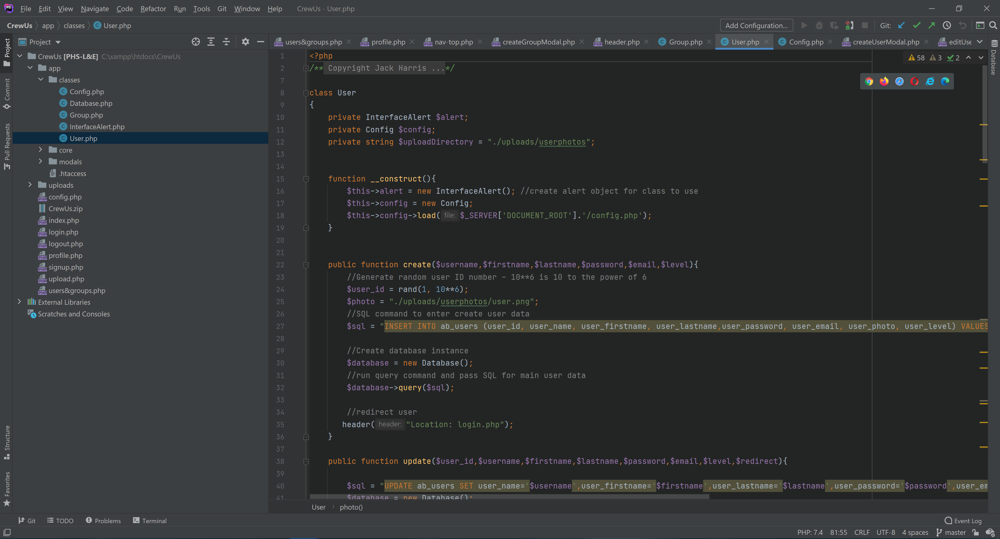
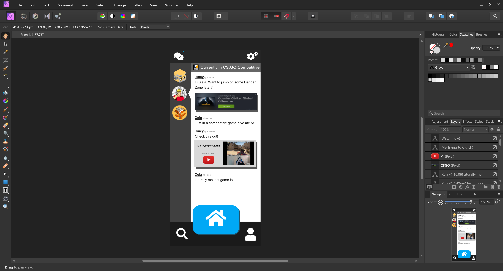
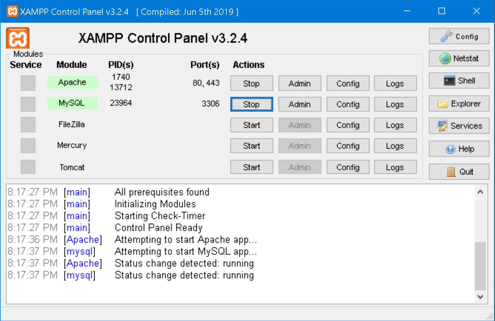
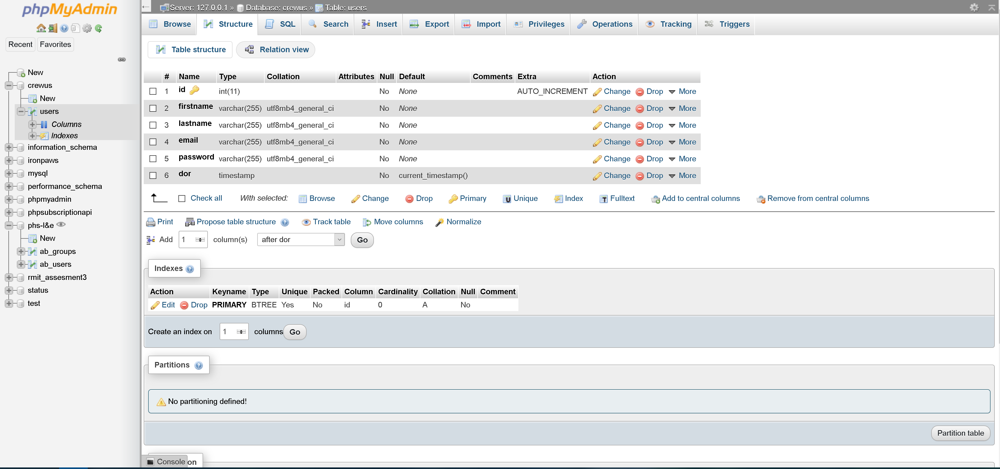
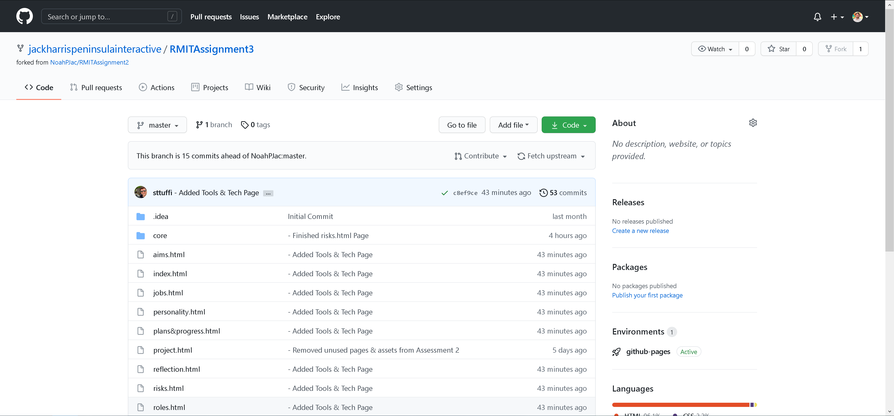

Project | Tools & Technology
Assignment Credit: Jaydyn Hoskings
Tools & Technology Overview
Throughout the assignment, there are necessary forms of tools and technologies required in the completion of the project. The project we chose to go with was a website and therefore required the correct software for completion of this task. For the development of a website, it requires the use of a basic computer as writing HTML is not particularly intense on PC performance and such a standard laptop could have been used for this task though the Computer that was used for the development of the website was more powerful than this and was using windows as the software that we used was developed for Windows.
Many of the software and tools choices were chosen for their ease of use, previous user experience such as PhpStorm and Xampp as the team members already had experience using and working with these products in personal and previous assignments. Also, some of the choices were picked due to affordability and value.
The following software list is a break down of our most used software but it does not constitute a compressive and total list of all software used.
PHP Storm
Phpstorm was used as the IDE used for writing the website, it was a free to use option as we could use the student discount for full access. PhpStorm provides an editor for PHP, HTML and JavaScript. We decided to go with Phpstorm over its competitors because of its ease of use out of the box feature set, the Vscode Plugins are a large part of the program, Extremely good github integration which is essential for our project. An additional feature that phpstorm provides is a design standard across their products.

Affinity Designer
Affinity Designer is a UI design tool that we used for the art and design of the website we picked this as an option as its one time purchase makes it a much better value for the time to complete this project rather than choosing something from Adobes line of products, also some of our group members had previous experience using this software which did affect our decision on using this product.

Xampp
Xampp is a free to use multi tool for use in development for for this project but we do plan on swapping to Virtualmin, Xampp is a great tool for local server hosting for the development phase of this project, but for the “release” of the project we will be swapping to virtualmin which provides us features such as a website control panel and the ability to automate many of the processes of the website.

MySQL Server
Xampp is a free to use multi tool for use in development for for this project but we do plan on swapping to Virtualmin, Xampp is a great tool for local server hosting for the development phase of this project, but for the “release” of the project we will be swapping to virtualmin which provides us features such as a website control panel and the ability to automate many of the processes of the website.

GitHub
GitHub is an industry standard version control cloud git service. It allows users and teams to collaborate on code projects together whilst maintaining version control and a way of rolling back to previous versions. GitHub does not really have any competitors in the market for cloud version control software as such we have chosen to work with GitHub to facilitate our needs and code cooperation.
